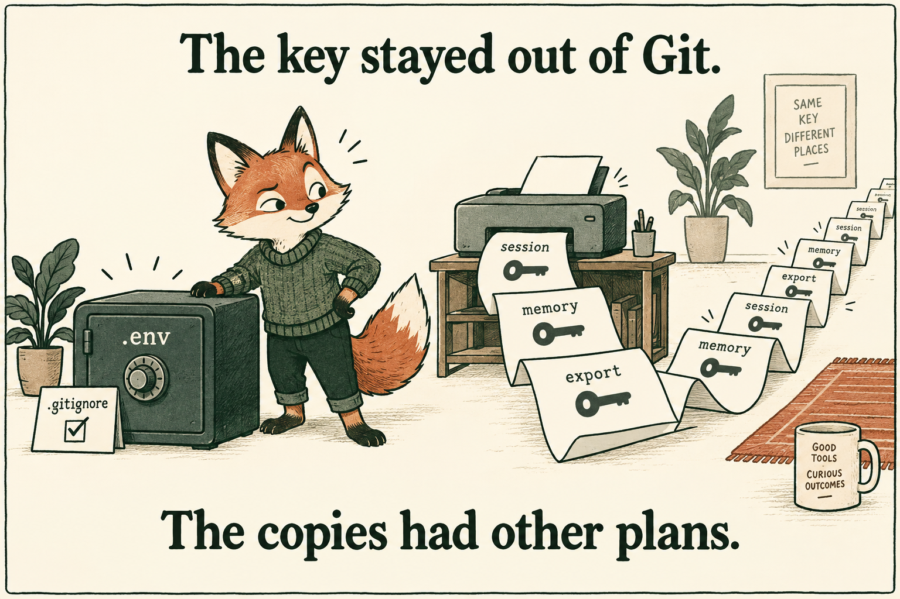

I wanted to know what was worth rescuing from my project folders.
Which folder belongs to which repository? What still works? What is half finished? What would be worth picking up again now that coding agents can help me move faster?
I began with a project inventory: connect the folders to their repositories, work out what still ran, and decide what to pick up next. Following those connections eventually took me into local stores containing copies of my API keys.
Project Observatory grew out of that investigation.
The projects I wanted to come back to
I'm Sergey Sheleg, a tech founder and product builder. I've spent 13 years building products, including co-founding Nicegram and leading Android development for the Ultimate Guitar app. These days, a lot of my work involves AI products and the agents I use to build them.
After that much building, the hard part isn't always starting something new. It's remembering enough about something you already started to make a sensible decision about it.
A directory name tells you very little. A repository gives you commits, but you still need to work out how they relate to the folder in front of you, whether the project runs, and what would have to happen before you could use it again. An old experiment might be worth reviving. It might also be a duplicate checkout with nothing useful left to do. Opening folders one by one is a poor way to decide where to spend your attention.
I wanted a map I could work from: folders connected to repositories, an audit of what existed and what was missing, enough context to decide what deserved another look. The point was to recover useful work, including things I'd stopped thinking about.
That question also needed to stay answered. If an agent worked on a project, I wanted to see what changed. If I came back later, I wanted the next investigation to begin with what I'd already learned.
How the project grew
- Find the projectsWhat is in these folders?
- Connect the contextWhich repository and services?
- Follow the accessWhere are the credentials?
- Keep observingWhat changed since I looked?
Then there were the key warnings
Alongside that work, I kept running into notifications about exposed keys. Another key, another warning, another interruption to whatever I was trying to build.
I got tired of reacting to them individually. I wanted to understand why this kept happening and what I was failing to see between the warnings.
Once you're trying to understand a project, its credentials become part of the picture. What does it connect to? Which account gives it access? Where is that access configured? If a credential needs replacing, what depends on it?
Key management became part of the inventory. Then came a more uncomfortable question: where else had those values ended up?
I could point to where a key was supposed to live. I couldn't account for all the copies.
What monitoring made visible
When I started monitoring, I could see credential copies in the surrounding tools and local stores. The warnings stopped being isolated interruptions. There was something concrete to inspect: a value, a location where it had been retained, and work needed to deal with it.
One reviewed cleanup in my setup recorded 202 value-replacement events across local memory stores: 66 in claude-mem SQLite and 136 in Chroma SQLite. That record is from 14 September 2026.
REVIEWED LOCAL CLEANUP · 14 SEPTEMBER 2026
Where the replacements happened
Value-replacement events, on the same scale
The evidence shows retained local copies; it does not show that an attacker obtained them. I've published the aggregate and its limits, keeping project names, credential values and raw records private.
I had been looking at where credentials were configured. Now I also had to look at the history left by using them. A memory store could hold a copy long after I had finished the task that put it there.
This was where the project became more serious for me. I still wanted to know which old idea to revive. But the same system also needed to help me understand the environment in which I was asking agents to work.
Your agent's work can outlive the session
In a Claude Code workflow, the repository is only part of what gets written to disk.
Consider a diagnostic command that prints configuration containing a key. Its output becomes available to the agent. A configured memory integration may then process information from that tool result. Finishing the task doesn't, by itself, remove a retained copy.
How a credential can acquire another copy
- Tool outputA command prints a value.
- Agent sessionThe result becomes available to the agent.
- Retained artifactA transcript or optional memory integration may keep it.
The mechanisms behind that example are documented: Claude Code's hook inputs include the session transcript path, and PostToolUse receives tool inputs and responses. The separate claude-mem project documents capturing tool observations through a hook.
claude-mem is an optional third-party integration, not Claude Code's built-in memory. Chroma is a storage component. Those names identify stores in my setup; finding copies there isn't evidence of a vulnerability in either project.
You can keep .env out of Git and still have a credential in a transcript, a diagnostic export or a memory store. Those artifacts may later be backed up or shared for debugging. A clean repository doesn't tell you what is inside them.
Before I share a session, I want to know whether the history contains a credential that still works.

Other builders are looking at the same backlog
A post in r/ClaudeCode puts the problem plainly. The author says they used to enter keys into conversations, later adopted better secret storage, and now want to remove the old secrets without losing the conversations.
It's one person's account, but the backlog is familiar: better secret storage today doesn't clean up yesterday's conversations.
There is also a more direct attack scenario. Check Point Research documented Claude Code configuration vulnerabilities that included API-key exfiltration through a malicious project configuration. The reported issues were patched before publication. Their report links to a video demonstration of the attack.
That research concerns attacker-driven theft, which is different from the local retention I observed. I link it because it makes another part of the problem visible: the configuration and integrations around an agent can affect where credentials go. Reviewing application code alone leaves those parts of the working environment out of view.
Why I kept the project inventory
The project inventory was still useful. I needed it to understand what a finding belonged to and what changing a credential might break.
A finding is easier to act on when you can connect it to a project, understand the service involved, and see the work already done. The same applies to an abandoned project: recent activity, missing setup and unresolved findings all affect whether it makes sense to pick it up again.
Project Observatory now brings project inventory, activity, metrics and findings into a local workspace. It can observe configured directories and repositories, collect from integrations you choose to enable, and keep evidence that you or an agent can return to. The original question about my folders remains part of the product.
For credentials, it can compare locally known secret values against supported artifacts you explicitly select and record findings without displaying the values. Optional remediation for supported companion-memory stores makes private backups before changing them. Those backups need the same care as the data they contain.
This has practical limits: known-value scans won't catch every unknown or encoded secret, and cleaning a local copy doesn't revoke a key at its provider. If you find a valid credential somewhere it shouldn't be, review its access and revoke or rotate it. Cleanup and revocation solve different parts of the problem.
I wanted the next warning to come with context: which project it belonged to, where a copy had been found, and what I'd already checked. That would let me pick up the investigation instead of starting it again.
Your projects, your workspace
I've released the full Project Observatory engine as open source. The code is shared. Each user supplies their own project directories, accounts and credentials, and keeps their inventory and observations in a private workspace.
The getting-started section includes a prompt for your coding agent to guide setup. Start with a directory you understand, inspect what the tool observes, and add integrations deliberately. Enter credentials locally through the documented setup, rather than pasting them into the conversation you're using to investigate copies.
For me, this began with wanting to find something worth working on again. Following that question took me into repositories, project state, account access, old conversations and memory stores. Each step exposed another part of my development environment that I needed to understand.
I still want to know what is worth reviving. I also want to know what has been happening while I wasn't looking.